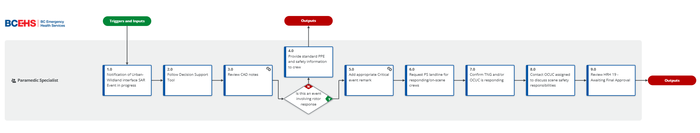

Urban-Wildland Interface SAR Events
Decision Support Tool
Purpose
This Decision Support Tool (DST) provides interim direction for the Paramedic Specialist (PS) team members in supporting paramedic safety during Back Country and Urban-Wildland Interface Search and Rescue (SAR) events. As the result of an ongoing Occupational Health and Safety Investigation, interim control measures are being implemented while BCEHS updates existing policies and procedures such as the High-Risk Hazards Field Support Guide and BCEHS OHS 180.1 Search and Rescue Situations.
Definitions
a) Urban-Wildland Interface SAR Events: Locations where BCEHS personnel operating in alignment with organizational policy (e.g., municipal trails) may be patient-side whilst requiring the support of Search and Rescue crews for extraction. Rotary-wing aircraft (helicopters) conducting long line and hoist operations, along with the deployment of other specialized rescue equipment, may occur in this Urban-Wildland interface and could introduce new risks for workers on scene.
b) Safety Risk: In general terms, a safety risk is exposure to any unsafe situation that paramedics are not trained or equipped to deal with. Some examples of unsafe exposure could involve unstable trees, swirling ground debris, rocks and other projectiles being released as a result of helicopter rotor wash.
Scope
This Decision Support Tool provides safety guidance for SAR helicopter operations within the Urban-Wildland Interface. This DST does not replace or override existing BCEHS policy, procedures and guidelines around air operations safety or the preparation of landing zones for BCEHS aircraft.
Procedure
Though rare in occurrence, Urban-Wildland Interface SAR events present a unique set of safety risks for responding paramedics. While the BCEHS Occupational Health and Safety team develops a formal update to policy and procedure, the Paramedic Specialist team will provide safety support for BCEHS crews in alignment with the team’s mandate of protecting BCEHS’ people, patients, and infrastructure.

{kind=link}
As defined in the ProMapp prcoess, the PS will receive a dispatch SIG and CliniCall consult for all Urban-Wildland events where helicopters are being utilized, and BCEHS personnel are on scene (i.e., not staged at separate LZ) for further safety direction.
Initial Notification
i) Once an Urban-Wildland SAR event notification is received, the PS will review event details in the CAD and confirm that a helicopter extraction is taking place.
ii) When confirmed, add a critical event remark with key safety information:
SAFETY ALERT
- Stage >50m (160ft) from hoist / landing zone as directed
- Conduct scene safety assessment
- Don PPE (helmet, eye protection and high-vis vest)
- Switch ONE portable radio to PEPCORD 1
- If any safety concerns, contact Paramedic Specialist at (604-829-4099)
- Review handbook for more information
iii) Request that the responsible channel operator contact responding / on-scene crews over the air to confirm safety direction with CliniCall.
iv) Contact the OCUC assigned to the call to discuss scene safety responsibilities if no TNG resource is responding or if the OCUC will arrive before the TNG resource.
v) If the interface event takes place in the Lower Mainland, T1/T2 will engage the Charge Emergency Medical Dispatcher in considering deploying a PS Unit (in TNG mode) to act as the on-scene Safety Officer.
This collaborative decision will weigh the expected response time and risk involved in reaching the scene (long code-3 response) with the safety benefits of BCEHS personnel and partner agencies having PS Safety Officer support.
Direction for Crews
i) Establish a BCEHS Incident Command (IC) to liaise with the SAR Manager (Event Command) and PS Safety Officer (if available) supporting patient extraction.
ii) The BCEHS IC will shift one portable radio to PEPCORD 1. to maintain situational awareness of air-to-ground operations per existing BCEHS guidelines.
iii) Direct all BCEHS personnel to don appropriate backcountry PPE (per HRH 14 and HRH 19). This includes:
| Category | Required Item |
|---|---|
| Head/ Eye | BCEHS Helmet (visor down) |
| Visibility | High-Visibility vest |
| Safety | Hearing protection |
iv) The BCEHS IC will liaise with the SAR Manager (Event Command) and PS Safety Officer (if available) regarding planned aircraft movements and patient packaging needs.
v) Once the patient has been packaged with support of ground teams, all BCEHS personnel will stage >50m (160ft) from the planned hoist / long line extraction area.
vi) Once the aircraft has completed the hoist/long line/loading operation, BCEHS personnel will return to the vehicle staging area for patient handover.
References
Related BCEHS Policy
BCEHS OHS 130 Paramedic Safety at the Scene
BCEHS OHS 180.1 Search and Rescue Situations
Guidelines/Procedures/Forms
High Risk Hazard Field Support Guide
Working In and Around Moving Vehicles and Equipment
Paramedic Specialist Deployment and Dispatching Procedure
Review Schedule
| Adopted | Next Review Scheduled | Owner | Reviewer |
|---|---|---|---|
| Dec 2024 | Mar 2025 | Clinical Hub Mnager | BCEHS OHS Team |